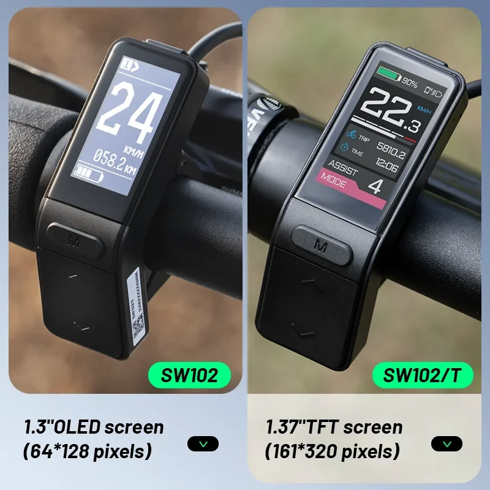
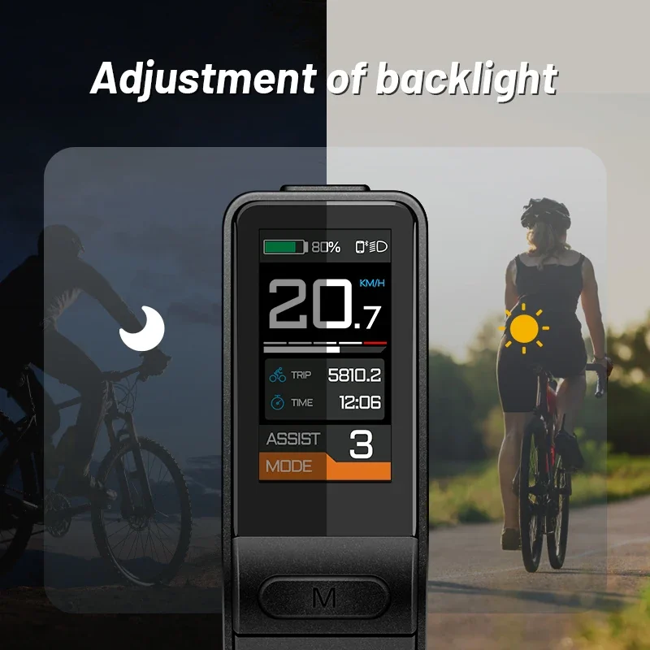
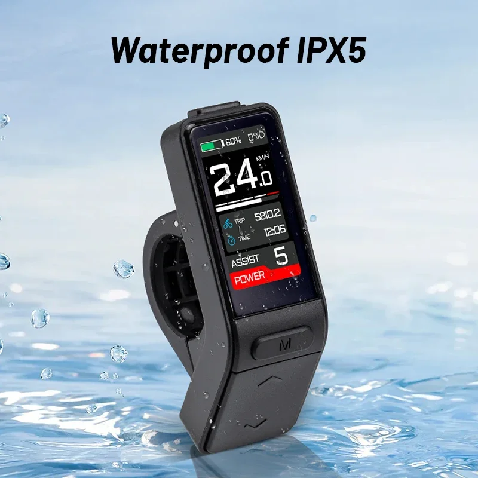
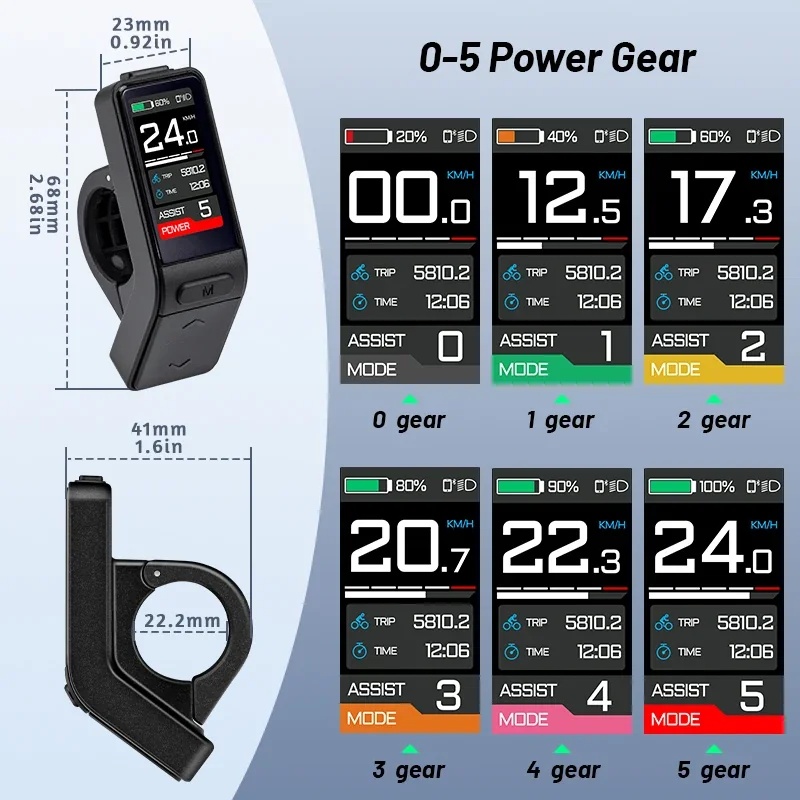
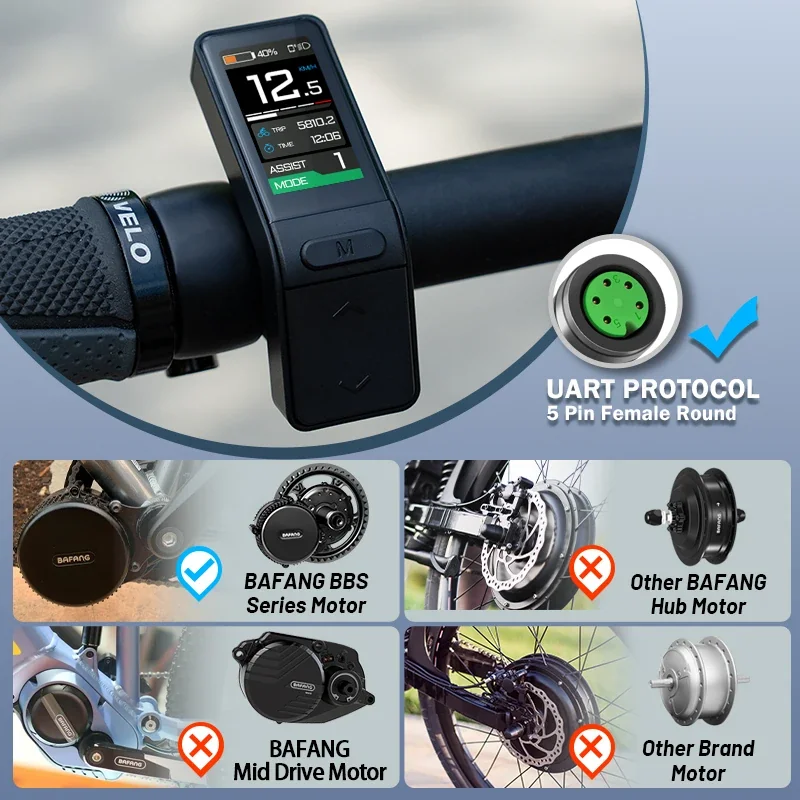
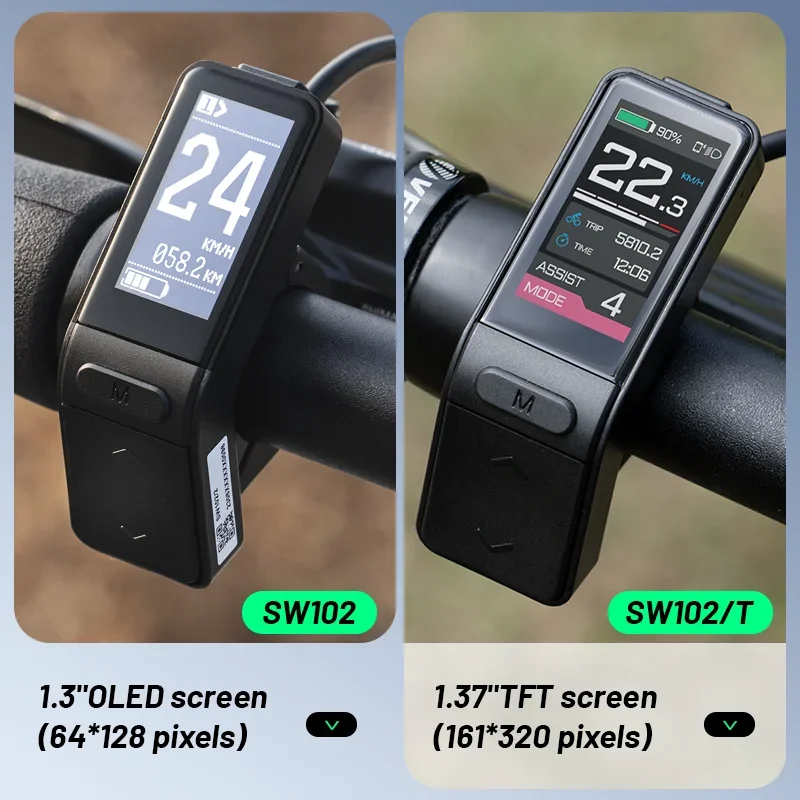
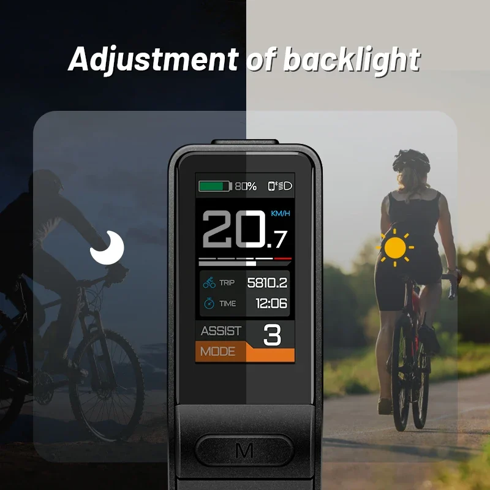
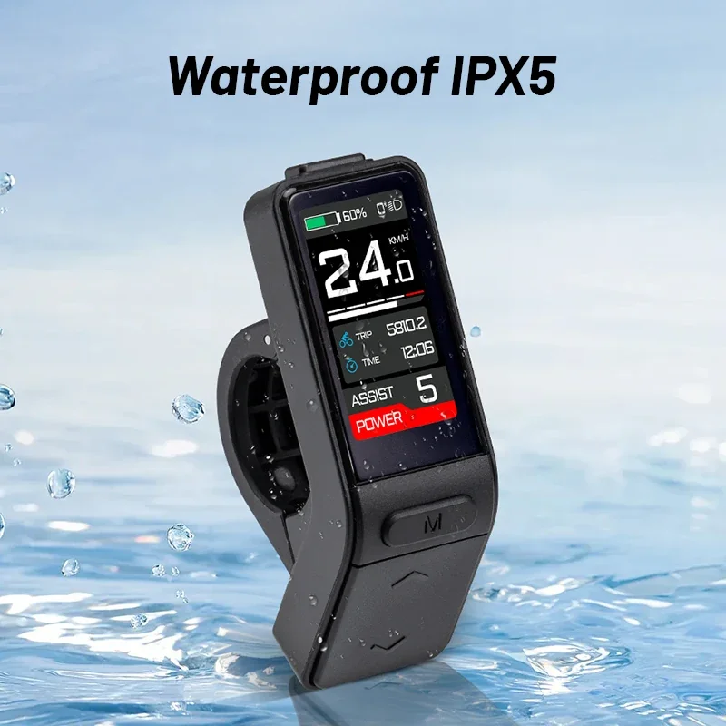
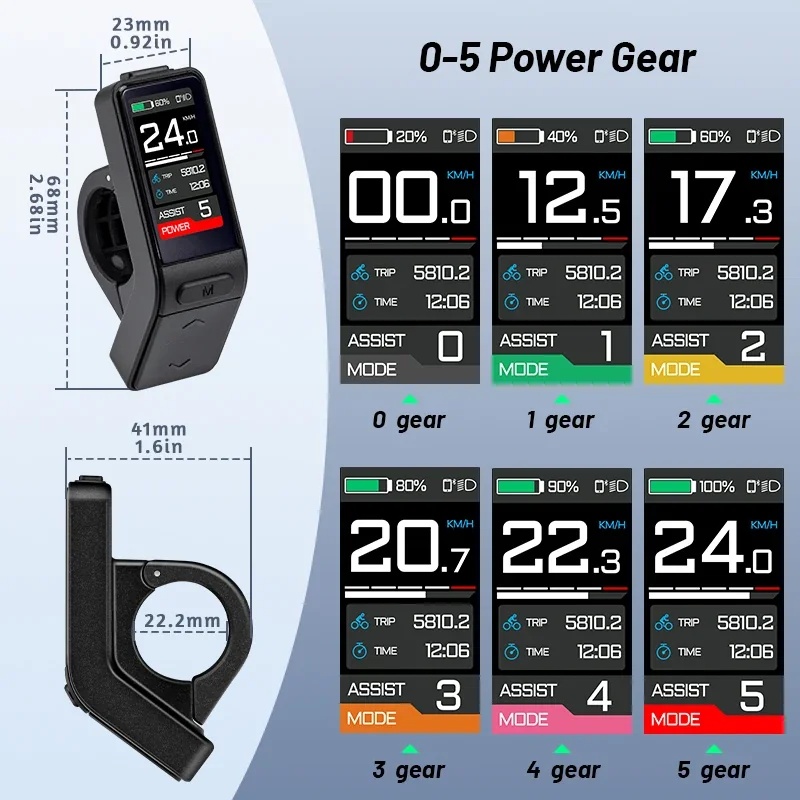
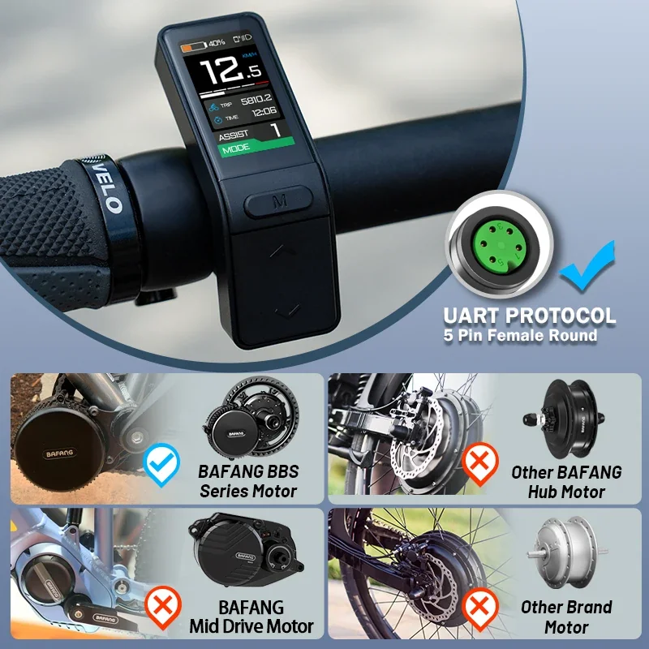

BAFANG SW102T écran LCD pour BAFANG BBS01B BBS02B BBSHD Mid Drive E vélos 0-5 niveaux protocole PAS UART
- Écran LCD intuitif : Surveillez facilement votre vitesse, le niveau de la batterie, le kilométrage et le niveau d'assistance.
- Niveaux d'assistance au pédalage réglables : Choisissez parmi 0 à 5 niveaux d'assistance au pédalage pour une expérience de conduite personnalisée.
- Compatibilité Bafang : Conçu spécifiquement pour les moteurs centraux Bafang BBS01B, BBS02B et BBSHD.
- Prise en charge du protocole UART : Permet une communication fluide avec votre système de vélo électrique pour des performances optimales.
L'écran LCD du SW102T est bien plus qu'un simple indicateur ; c'est votre centre de commande pour une expérience de conduite agréable et efficace à vélo électrique.
L'écran EBike Display SW102T est un écran LCD complet conçu spécifiquement pour les moteurs de vélos électriques à entraînement central BAFANG, y compris les modèles BBS01B, BBS02B et BBSHD. Cet écran convivial fournit des informations essentielles sur votre trajet, vous permettant de surveiller et d'ajuster facilement les performances de votre vélo électrique.
- Contrôle PAS (capteur d'assistance au pédalage) intégré à 5 niveaux : Ajustez votre niveau d'assistance grâce à cinq réglages PAS distincts, allant d'un soutien subtil à une assistance puissante.
- Écran LCD lumineux : Profitez d'une visibilité optimale même dans des conditions d'éclairage difficiles grâce à l'écran LCD lumineux et facile à lire.
- Compatibilité avec le protocole UART : Le SW102T s'intègre parfaitement aux moteurs BAFANG via le protocole UART, garantissant un transfert de données et une communication fiables.
- Interface utilisateur intuitive : Naviguez sans effort dans les menus et les paramètres grâce à l'interface utilisateur simple et intuitive.
L'écran LCD du SW102T est conçu pour répondre aux exigences élevées des systèmes de vélos électriques.
- Type d'affichage : LCD
- Taille de l'écran : Compact et facile à lire
- Niveaux d'assistance au pédalage : 5 niveaux réglables
- Connectivité : Protocole UART pour une communication fluide avec les moteurs BAFANG
- Options de montage : Conçu pour un montage sécurisé sur le guidon de votre vélo électrique.
L'écran pour vélo électrique SW102T offre de nombreux avantages pour améliorer votre expérience :
- Contrôle personnalisé : Ajustez la puissance de votre vélo électrique au niveau d'assistance souhaité, que vous préfériez un soutien doux ou une accélération puissante.
- Sécurité et visibilité accrues : L'écran LCD lumineux assure une excellente lisibilité dans diverses conditions d'éclairage, vous permettant ainsi d'être mieux conscient de votre environnement. Intégration parfaite : Le SW102T s'intègre parfaitement aux moteurs BAFANG via le protocole UART, garantissant un échange de données fluide et des performances fiables.
- Utilisation conviviale : L'interface utilisateur intuitive facilite la navigation dans les menus et les paramètres, permettant des réglages rapides et sans effort.
Le SW102T est conçu pour s'intégrer facilement à votre vélo électrique équipé d'un moteur BAFANG. Fixez simplement l'écran sur votre guidon et connectez-le à votre moteur à l'aide du câble UART fourni. Utilisez les boutons intuitifs de l'écran pour naviguer dans les menus, régler l'assistance au pédalage et consulter les informations essentielles telles que la vitesse, le niveau de batterie et la distance parcourue.
Vérifiez régulièrement le niveau de batterie de votre vélo électrique et assurez-vous qu'il est correctement chargé pour optimiser ses performances. Consultez le manuel d'utilisation pour obtenir des instructions détaillées et des consignes de sécurité spécifiques à votre système moteur BAFANG.